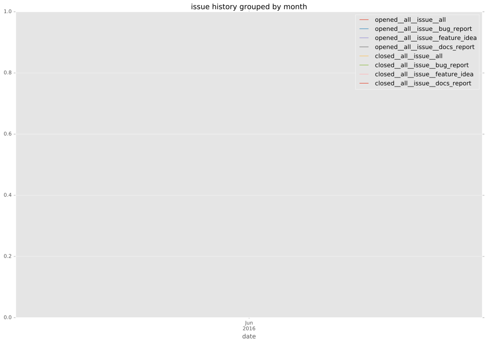

total issue counts
bugfix pull request: 9
feature pull request: 4
pullrequest: 13
issue history

days open by issue type
bugfix pull request
count: 15
std: 7.01495002188
min: 0
max: 20
median: 0.0
mean: 2.73333333333
feature pull request
count: 6
std: 30.3095144578
min: 0
max: 76
median: 2.5
mean: 14.3333333333
all
count: 21
std: 17.1157126363
min: 0
max: 76
median: 0.0
mean: 6.04761904762
pullrequest
count: 0
std: nan
min: nan
max: nan
median: nan
mean: nan
closures grouped by total days open